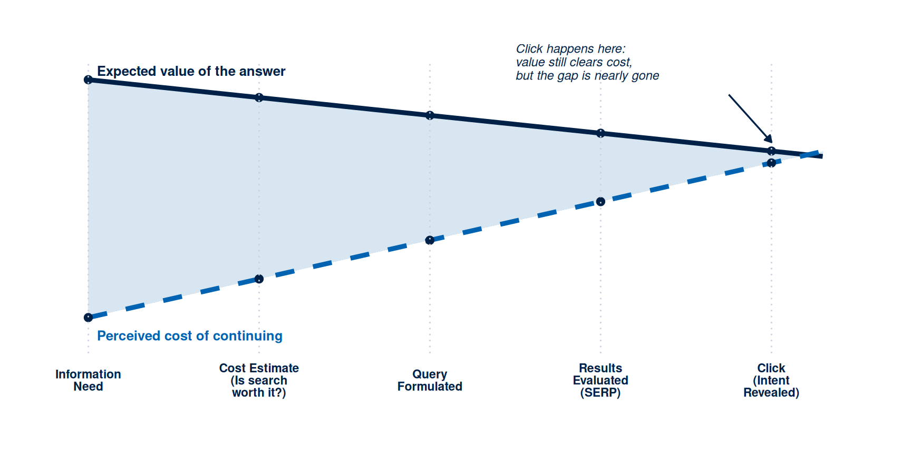
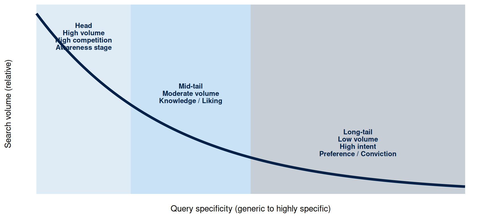
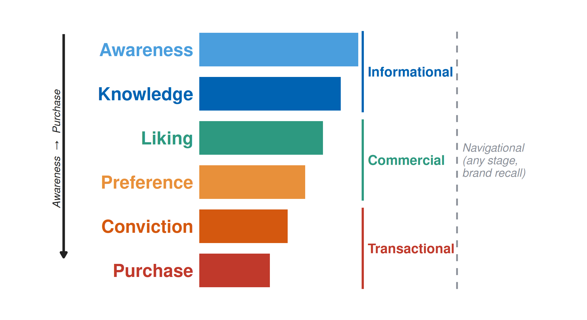
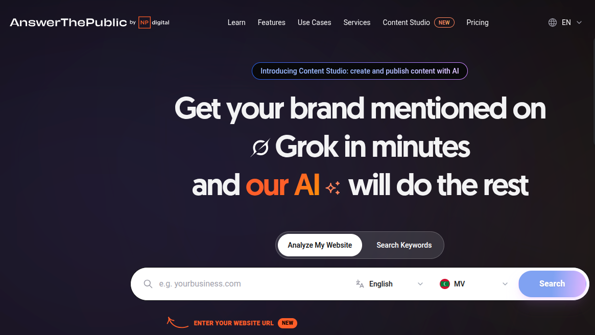
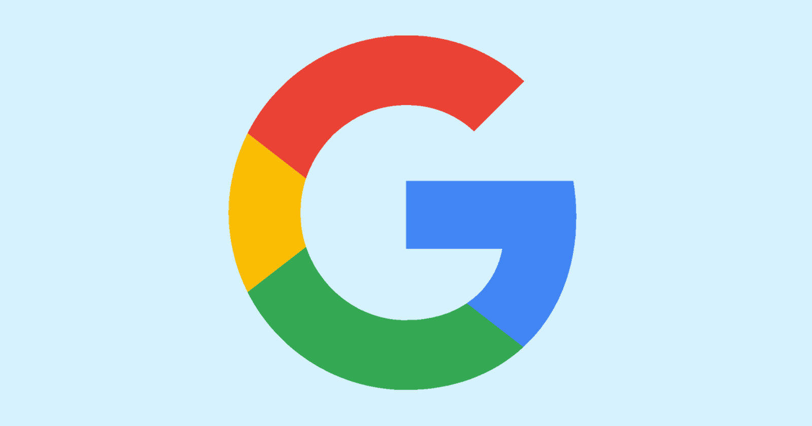
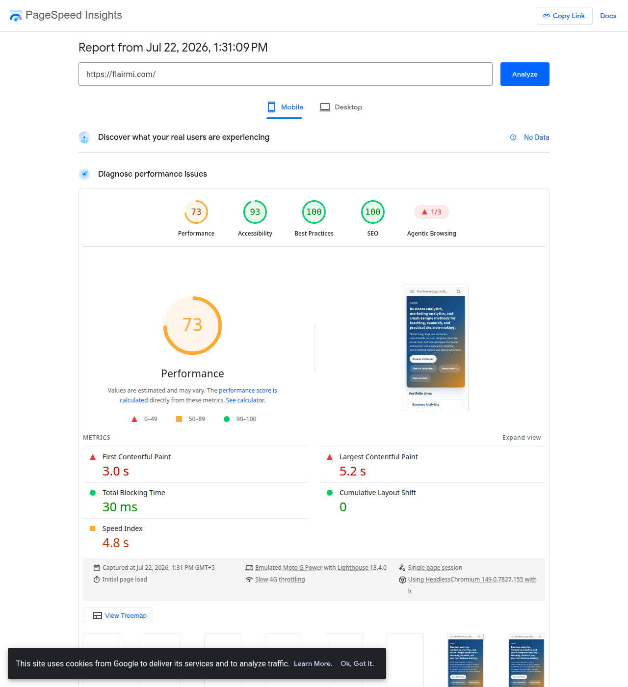

| Canvas Element | What It Determines This Week | Reef Edge Guesthouse Example |
|---|---|---|
| Primary target segment | The specific group your keyword research and page content must speak to | International travellers comparing Maldives guesthouse options against resorts on price and reef access |
| Hierarchy of effects stage | Where that segment sits between Awareness and Purchase, which fixes the intent type (informational, commercial, transactional, navigational) your primary keyword should match | Preference |
Week 6: Search Engine Optimisation
Think about how you felt the last time a display ad interrupted you mid-scroll while you were reading something you actually cared about. Your own intended audience feels exactly that same interruption every time your ad pops up in their feed, and it costs you their goodwill, which may even push them to avoid your content next time. So how do you reach them on their own terms instead? Imagine someone in the UK searching for “guesthouse Maldives house reef access”: you are the digital marketing manager for that guesthouse, and your page ranks for exactly that query. You meet that same searcher already looking for what you offer, before a single display ad ever gets the chance to interrupt them. That is exactly how SEO works: you win their attention because they came looking for you first. That difference between reaching people through paid display advertising and appearing in their own search results explains why SEO traffic tends to convert better than paid display traffic, and why it costs less to sustain over the long run. Rank for a high-intent query and you reach someone already partway through the hierarchy of effects, before you have spent a single dollar on media.
This week gives you a theoretical account of why audiences search, how search engines decide what ranks, and the decision sequence you need to follow to produce a page that earns visibility. This week’s learning design allocates nine hours to build it: a one-hour lecture, a two-hour tutorial, and six hours of self-directed study. The practical artefact you produce is an SEO mini-audit: a structured analysis of search intent, keyword opportunities, on-page gaps, and authority signals for your campaign’s primary landing page or content hub.
Bring your Week 2 canvas. If yours still feels incomplete, Table 1 isolates the two fields this week’s keyword decisions actually depend on, filled in with the Reef Edge Guesthouse example this chapter returns to throughout.
The keyword decisions you make this week should trace back to the target segment and the hierarchy stage already sitting in that canvas. Reef Edge Guesthouse could rank for “Maldives holiday,” a term with far more searches than any word in its actual cluster, and gain nothing from it, because that term alone says nothing about who is searching or what they have already decided. “Best guesthouse Maldives house reef access,” “affordable guesthouse Maldives snorkelling,” and “guesthouse vs resort Maldives price” earn their place because each one names the same segment, an international traveller comparing a guesthouse against a resort, already at the Preference stage of that comparison. Build your own keyword list the same way: for every term, name the segment and the stage it reveals, or drop the term.
This Week’s Lecture
Lecture Search Engine Optimisation
Discussion
1 Introduction & Recall
⏱ 10 min
Aims; quick poll on query intent and SERP features.
Acquisition
2 SEO Foundations
⏱ 30 min
SERP anatomy and intent; keyword types and clustering; titles, meta, CTR, and snippets; tags and structure (H1-H3, anchors); content and internal links; local cues; short ethical notes.
Practice
3 Guided Whole-Class Discussion
⏱ 15 min
Given one keyword cluster, sketch H1-H3 and three internal links; identify one snippet tweak.
Assessment
4 Attendance & Exit Check
⏱ 5 min
One-minute exit check: state one on-page fix to prioritise and why.
Learning Objectives
After studying this chapter, you should be able to:
- Apply information foraging theory to explain why users conduct searches and what this implies for the design of search-optimised content.
- Explain the long tail of search and identify how it applies to audience segmentation decisions in low-volume markets.
- Describe how search engines determine relevance through on-page signals and authority through off-page signals.
- Conduct a structured keyword research session using public tools, classify queries by search intent type, and group related terms into a keyword cluster built from one primary and two supporting terms.
- Apply on-page SEO principles to evaluate a landing page or article against the requirements of a target keyword cluster.
- Assess local SEO signals, including NAP (name, address, phone) consistency and Google Business Profile presence, for a campaign serving a geographically bounded audience.
- Describe the relationship between service-dominant logic and content marketing as an SEO strategy, and apply ethical caution to any outreach used to earn links.
- Produce an SEO mini-audit that identifies keyword cluster opportunities, on-page gaps, local signal requirements, and authority signal requirements.
Lecture: Search Engine Optimisation (1 Hour)
Read the theory below before the lecture, with your Week 2 canvas open beside it. The tutorial that follows asks you to run a structured SEO audit, and every decision in it needs to trace back to your target segment and hierarchy stage.
Why Your Website Has to Compete for the Search Results Page
Type “guesthouse Maldives” into Google and what comes back is several different things stacked on top of each other. A handful of paid ads sit at the very top, the channel Week 7 covers. Below them sits a local pack, a map with pinned businesses, for a query this specific and geographically anchored. Below that sit the organic listings this chapter is actually about, ranked by the relevance and authority signals covered later in this chapter. Sometimes a featured snippet or a knowledge panel sits above all of it, pulled directly from a single page’s content. Search professionals call this whole stacked page the SERP, the search engine results page, and every position on it is a separate competition with its own rules.
Reef Edge Guesthouse can only compete for any of those positions because it has a website: a page it owns and controls outright, unlike a social media profile a platform can change overnight or a paid ad slot that disappears the moment the budget runs out. That page is the asset every decision in this chapter improves. Keyword clustering decides which query the page competes for. On-page structure decides whether it earns the organic listing. Local signals decide whether it earns a place in the map pack. None of that competition starts until the page exists.
How Searchers Decide to Search
There is a deliberate logic behind people’s search behaviour. Researchers have spent decades studying search behaviour itself, trying to explain why one person types “best guesthouse Maldives house reef access” while another scrolls straight past a display ad without a second glance. One theory that explains it is called information foraging theory. Pirolli and Card built it on an analogy with animal behaviour: information seekers weigh the cost of finding relevant information against the expected value of what they will find, the same calculation an animal makes before travelling to a food source (Pirolli, P. and Card, S., 1999).
Think about the potential traveller from India who types “best guesthouse Maldives house reef access.” Before she opens Google, she has already weighed the cost of comparing guesthouses herself against the value of finding one with genuine reef access at a fraction of resort prices. She has decided the resort alone leaves her comparison incomplete, decided a search engine is the fastest way to line up guesthouse options against it, and set aside the next few minutes to read what comes back. Someone scrolling past Reef Edge’s display ad mid-article has made none of those decisions yet. Figure 1 traces that calculation stage by stage, and shows why the value a searcher expects has to stay ahead of the cost they are willing to bear, right up to the click.
For SEO, the search query itself is a direct clue of what the audience needs, how specifically they are thinking about it, and how far along the decision process they are. Someone who searches “Maldives holiday” is still at the beginning of awareness, forming a general need with no guesthouse or resort yet in mind. Someone who searches “best guesthouse Maldives house reef access” has already ruled out a plain beach holiday: a guesthouse is the format, reef access is the feature, and they are far enough into the decision to be comparing named options. These two queries call for entirely different pages, and a Reef Edge page built to answer the first leaves the second, and more valuable, searcher unconvinced.
TipTheory-to-decision bridge
Information foraging theory states that searchers optimise the cost of finding information against its expected value. Select keywords because the intent behind them matches the audience state at a specific hierarchy stage, over selecting for high search volume alone. A keyword with 50 monthly searches that exactly matches the intent of your target segment at the Conviction stage outperforms a keyword with 5,000 monthly searches that reaches an Awareness-stage audience the campaign has no way to convert yet.

The Long Tail of Search
Chris Anderson coined the long tail to describe a lopsided distribution, and SEO literature has since applied it directly to search queries (Anderson, C., 2006). A small number of very high-volume, generic queries sit at the head. A very large number of low-volume, highly specific queries trail behind them at the tail, and in aggregate that tail often carries more total search traffic than the head, at higher purchase intent and lower competition.
For campaigns in low-volume markets, such as the Maldives, the long tail principle carries outsized weight: it is often the only realistic path to ranked visibility. Reef Edge Guesthouse competing for the query “guesthouse Maldives” faces competition from established travel platforms and price-comparison sites with thousands of inbound links and years of domain authority. The same guesthouse competing for “best guesthouse Maldives house reef access” faces a smaller pool of competitors, a more specific audience intent, and a much more actionable conversion path.
The long tail also maps cleanly onto the hierarchy of effects. Head keywords (high volume, generic) tend to attract Awareness-stage audiences. Mid-tail keywords (moderate volume, somewhat specific) tend to attract Knowledge and Liking-stage audiences. Long-tail keywords (low volume, highly specific) tend to attract Preference and Conviction-stage audiences. A keyword strategy aligned to the hierarchy stage should therefore prioritise mid-tail and long-tail terms for the current campaign objective.
TipTheory-to-decision bridge
The long tail of search states that highly specific queries have lower volume, lower competition, and higher purchase intent. For a campaign in a small or specialised market, concentrate on mid-tail and long-tail queries that match the target audience’s specific intent, over competing for head terms that demand domain authority still to be built.

TipInteractive Lab: Long-Tail Keyword Positioning Lab
Use this simulator to see the long-tail trade-off in motion. Drag the specificity slider from a generic head term toward a highly specific long-tail phrase and watch relative search volume fall as competition eases and purchase intent climbs. Find the specificity level where your own campaign’s target keyword sits, and note the hierarchy stage the lab suggests for it.
Try it with Reef Edge Guesthouse’s own keywords:
- Set the slider to 2. This is roughly where “guesthouse Maldives” sits: high relative search volume, high competition, and an Awareness-stage audience still forming a general need.
- Move it to 8. This is roughly where “best guesthouse Maldives house reef access” sits: search volume drops, but so does competition, and purchase intent climbs into the Preference stage, the exact audience Reef Edge is targeting.
- Compare the four value boxes at each position. Reef Edge chose the specific term over the generic one because the intent and hierarchy stage matched its target segment; the term’s higher volume had nothing to do with the decision.
- Repeat the same three steps with your own campaign’s head term and long-tail term, and record where each one lands in your keyword table.
Tutorial link: Supports Activity 1 (Keyword Taxonomy Sprint), where you classify head, mid-tail, and long-tail terms by hierarchy stage.
IS link: Feeds into your Week 6 submission: the primary target keyword’s justification for selection.
#| '!! shinylive warning !!': |
#| shinylive does not work in self-contained HTML documents.
#| Please set `embed-resources: false` in your metadata.
#| standalone: true
#| viewerHeight: 560
#| components: [viewer]
library(shiny)
library(bslib)
ui <- page_fluid(
card(
card_header("Long-Tail Keyword Positioning Lab"),
sliderInput("specificity", "Query specificity",
min = 1, max = 10, value = 3, step = 1, width = "100%"),
tags$small("1 = generic head term. 10 = highly specific long-tail phrase. Move the slider to see how specificity trades search volume for purchase intent and reachable competition.")
),
layout_column_wrap(
width = "150px",
heights_equal = "row",
value_box(title = "Relative search volume", value = textOutput("volume"), theme = "primary"),
value_box(title = "Competition level", value = textOutput("competition"), theme = "warning"),
value_box(title = "Purchase intent", value = textOutput("intent"), theme = "success"),
value_box(title = "Likely hierarchy stage", value = textOutput("stage"), theme = "info")
),
card(
card_header("Where this keyword sits on the long tail"),
plotOutput("curve_plot", height = "230px")
)
)
server <- function(input, output, session) {
search_fn <- function(x) exp(-0.32 * x) * 9500
vals <- reactive({
x <- input$specificity
list(
volume = round(search_fn(x)),
competition = round(100 * exp(-0.28 * x)),
intent = round(100 * (1 - exp(-0.35 * x))),
stage = if (x <= 2) "Awareness"
else if (x <= 4) "Knowledge / Liking"
else if (x <= 7) "Preference"
else "Conviction / Purchase"
)
})
output$volume <- renderText(format(vals()$volume, big.mark = ","))
output$competition <- renderText(paste0(vals()$competition, " / 100"))
output$intent <- renderText(paste0(vals()$intent, " / 100"))
output$stage <- renderText(vals()$stage)
output$curve_plot <- renderPlot({
x_range <- seq(0, 10, length.out = 200)
y_range <- search_fn(x_range)
par(mar = c(4, 4.5, 1, 1), bg = "white")
plot(x_range, y_range, type = "l", lwd = 3, col = "#002147",
xlab = "Query specificity", ylab = "Relative search volume", yaxt = "n")
points(input$specificity, search_fn(input$specificity), pch = 19, cex = 2.2, col = "#cc3333")
abline(v = input$specificity, lty = 2, col = "#a8c8e3")
})
}
shinyApp(ui, server)
NoteFree Tool: Ubersuggest
Ubersuggest is a keyword research and SEO overview tool by Neil Patel. The free tier provides three searches per day with keyword volume estimates, competition scores, and content ideas for any query.
What it does in this chapter: Enter your target keyword in Ubersuggest to see monthly search volume, keyword difficulty, and related long-tail suggestions. Set the Location field to a real market your audience searches from. Reef Edge Guesthouse’s international traveller segment returns a genuine volume figure once the location is set to a specific source country such as India; the same term against “All Locations” returns nothing usable. A hyper-specific, feature-loaded phrase can still return “no search volume data” even with the location set correctly. When that happens, step back to the plain two or three-word version of the term to read a real number, then mine the Keyword Ideas panel beneath it, Google Autocomplete, Questions, Prepositions, and Comparisons, for the specific long-tail phrasing your audience actually types.
Free tier: Three keyword searches per day; no account required for basic lookups.
Tutorial task: Enter your campaign’s main topic keyword, and set the Location field to a country or region your target segment actually searches from. Identify one head keyword, one mid-tail keyword, and one long-tail keyword from the results and the Keyword Ideas panel. If the long-tail keyword still returns no search volume data, record that absence as your evidence and cite the mid-tail term’s volume for context. Classify each keyword by search intent type and hierarchy stage using the framework in Table 2.
Keyword Clustering
A single target keyword is rarely how a real audience searches. The Reef Edge Guesthouse audience searching for “best guesthouse Maldives house reef access” also searches “affordable guesthouse Maldives snorkelling” and “guesthouse vs resort Maldives price”: three distinct queries expressing the same underlying need. Building one page per exact keyword duplicates effort and splits the authority a single strong page could otherwise concentrate. Keyword clustering groups queries that share intent under one page, built around a primary term with two or three supporting terms drawn from the same cluster.
A cluster is built in two steps. First, group the terms captured during keyword research by shared intent, over shared wording alone: “cheap guesthouse Maldives” and “guesthouse price comparison” share commercial intent even though they share only one word. Second, select the strongest term in the group, judged by search volume balanced against reachable competition, as the primary target, and treat the remaining two or three as supporting terms the same page should also address in its headings and body content.
TipTheory-to-decision bridge
Information foraging theory explains why clustering works: a searcher who lands on a page after typing any of three related queries is foraging for the same underlying answer, so one well-built page satisfies all three searches at once. Build the page around the primary term, and work the supporting terms into subheadings and body content. Three thin pages built to compete for the same three queries would only split the authority a single strong page could concentrate.
How Search Engines Determine Rankings
Search engines lean on two signals to decide which pages rank for a query: relevance and authority. Relevance asks whether the page’s content matches the query’s intent. Authority asks whether the page, and the domain hosting it, counts as a trusted source on the topic.
Relevance signals sit on the page itself, assessed straight from its own content. Four elements carry the most weight: the title tag, the HTML element that names the page in search results and browser tabs; the meta description, the short summary under the title that shapes click-through rate rather than ranking directly; the H1 heading, the page’s primary visible headline; and the body content, judged by how much of it, and where, actually carries the target keyword and its related terms. Get these four right and the rest of the on-page work follows.
A page is assessed for semantic relevance, well beyond keyword repetition. Modern search engines analyse the full context of a page’s content using natural language processing, comparing it against the corpus of content associated with the query. A page that uses the target keyword ten times but has thin, underdeveloped content on the topic will rank below a page that uses the keyword three times in a well-developed, comprehensive article.
Authority signals are primarily off-page: they are assessed by examining what other pages and domains link to the page. Each inbound link from an external domain is interpreted as a vote of confidence in the linked page’s relevance and quality. Links from high-authority domains (major publications, government sites, established institutions) carry more weight than links from low-authority sites. A newly launched domain with no inbound links starts from near-zero authority and must build it over time through content that other sites find worth linking to.
Page speed, mobile responsiveness, and structured data (schema markup that helps search engines parse a page’s content) form the technical floor beneath crawlability and indexability. Get the floor right, matching the schema to the content type (article, event, course, business listing), and a page gets crawled more often, indexed more accurately, and surfaced more reliably in relevant results.
Search Intent Classification
Two travellers can type almost the same words into Google and want completely different things. One types “what is a guesthouse in the Maldives” because she is still learning what the term even means. The other types “best guesthouse Maldives house reef access” because she has already decided on a guesthouse and is now comparing named options. Search engines read that difference as intent, and classify every query into one of four intent types. Content that matches the dominant intent type for a keyword ranks; content that misses it struggles, regardless of technical quality.
Informational intent signals someone who wants to learn or understand something, typically opening a query with “what is”, “how to”, or “why does”, or naming a topic with no transactional modifier attached. “What is a guesthouse in the Maldives” is a clean example: it calls for an educational article, a guide, or a tutorial, over a sales pitch.
A navigational query names a destination directly, a brand or a proper noun, as in “Reef Edge Guesthouse Maldives”. The user already knows where they want to go; the only content that satisfies them is the specific branded page they are looking for.
Commercial intent shows up as comparison: comparative terms, qualifiers, or location modifiers stacked onto a query, such as “best guesthouse Maldives house reef access”. Serve this with comparison articles, verified guest reviews, and price breakdowns, since the user is still weighing named alternatives.
By the time a query turns transactional, urgency has entered the picture: “apply”, “enrol”, “buy”, “book”, “download”. “Book Reef Edge Guesthouse Maldives” leaves no doubt. Meet it with a landing page built for conversion, the call to action already in view.
Figure 4 maps the four intent types onto the hierarchy of effects funnel introduced in Week 2, the same funnel Week 5 used for video ad lengths.

Table 2 adds the example query, content type, and primary metric each intent type requires, once the stage is fixed by the figure above.
| Intent Type | Example Query | Appropriate Content Type | Primary Metric |
|---|---|---|---|
| Informational | what is a guesthouse in the Maldives | Educational article, guide, or glossary entry; no conversion pressure | Organic impressions and click-through rate |
| Commercial | best guesthouse Maldives house reef access | Comparison article, verified guest reviews, price and amenity breakdown | Time on page, scroll depth, and rooms-and-rates page visits |
| Transactional | book Reef Edge Guesthouse Maldives | Landing page with clear booking CTA, room rates, and availability | Conversion rate and cost per acquisition |
| Navigational | Reef Edge Guesthouse Maldives | Branded homepage with clear navigation | Brand query volume growth |
NoteFree Tool: AnswerThePublic
AnswerThePublic is a keyword research tool that generates a visual map of the questions, prepositions, and comparison phrases that real users type around any seed keyword. It sources data from Google’s autocomplete suggestions, which reflect actual audience language.
What it does in this chapter: Enter your campaign’s primary keyword. AnswerThePublic organises the results into question groups (what, why, how, when, which), prepositions (for, near, without), and comparisons (versus, like, and). Each result represents a real search query with commercial, informational, or transactional intent. Use it to identify long-tail keywords that match your hierarchy stage.
No account needed: Two to three searches per day are free with no sign-up. Open the URL, enter a keyword, and view the visualisation immediately.

Tutorial task: Enter your campaign topic in AnswerThePublic. Identify one question-format keyword for each intent type (informational, commercial, transactional) using the framework in Table 2. Add the three keywords to your SEO mini-audit keyword table with intent classification and hierarchy stage notes.
On-Page Optimisation
On-page optimisation is the practice of structuring and writing a page’s content so that its relevance to a specific query is clear to both the search engine and the user. The core principle is that the page should earn its ranking by being the best available answer to the query it targets, well beyond a page that simply contains the associated keywords.
The title tag should be 50 to 60 characters, include the target keyword, and communicate the page’s value to the user who reads it in the search results. A title tag that reads “Guesthouse | Reef Edge” (22 characters) is weaker than “Reef Edge Guesthouse Maldives: Reef Access, Low Rates” (53 characters, inside the standard) because the second version communicates specificity, differentiates from generic alternatives, and includes geographic and feature signals relevant to the long-tail query.
The H1 heading is the primary visible headline on the page. It should match the topic of the title tag closely, though the exact wording can differ. It is the first element a visitor reads, and it must immediately confirm that they have reached the right page for their query.
The body content should be comprehensive without being padded. A 1,500-word article that fully addresses the query’s intent and related questions will outrank a 3,000-word article that repeats itself or includes irrelevant content. Use subheadings (H2 and H3) to structure the content, so both users and search engines can spot the main topics at a glance. Add internal links to related pages on the same domain, and anchor at least one factual claim to a credible source.
NoteFree Tool: Google PageSpeed Insights
Google PageSpeed Insights analyses any publicly accessible URL and returns performance scores, Core Web Vitals measurements, and specific improvement recommendations for both mobile and desktop. No account is required.
What it does in this chapter: Enter your campaign landing page URL to check whether it passes the technical SEO floor: load speed, mobile responsiveness, and largest contentful paint (LCP). PageSpeed Insights provides actionable recommendations for each failing metric, showing exactly which elements are causing delays and what their impact on ranking eligibility is.
No account needed: Open the URL, enter any live web page address, and get full results immediately. No sign-in, no installation.

Tutorial task: Enter your campaign’s landing page URL in PageSpeed Insights. Record the mobile performance score and any failing Core Web Vitals. Note these as technical SEO assumptions in your mini-audit: if the score is below 70, add a landing page speed improvement as a recommendation in your audit document.
NoteFree Tool: SEOmator SEO Audit
SEOmator’s free SEO audit tool crawls any public URL and returns a single report covering roughly 170 checks across sixteen categories: title tags, meta descriptions, headings, internal links and anchor text, page speed, images, structured data, and accessibility among them. It runs without an account.
What it does in this chapter: it consolidates into one report most of what your on-page and authority audit asks for separately. Where PageSpeed Insights answers the speed question authoritatively, this answers the on-page question broadly, and the two together cover the technical floor.
Read it critically. An automated report ranks findings by rule breach, and a rule breach is a poor proxy for commercial priority. A missing favicon may be flagged as a hard failure while a title tag twenty characters over length registers only as a warning, even though the title decides whether anyone clicks the result at all. Treat the report as evidence, treat its severity labels as inference, and supply the prioritisation yourself.
Watch for outdated heuristics. The report includes a keyword density check that flags “keyword stuffing” above a fixed percentage. As the ranking discussion earlier in this chapter sets out, search engines assess semantic relevance across the whole document, so a density figure alone tells you little. Where a finding contradicts the principles in this chapter, say so in your audit and explain which you trust.
Tutorial task: you will read a real report for a live site in Activity 4, and choose the two findings you would act on first.
Local SEO Signals
A campaign tied to a physical location, such as a guesthouse serving a specific atoll, competes for a distinct ranking signal alongside relevance and authority: local proximity and consistency. Google weighs a listing’s NAP data, the name, address, and phone number as they appear across the web, when deciding which local businesses to surface for a geographically anchored query such as “guesthouse near me” or “best guesthouse Malé”. A business name spelled two different ways across its website, its Google Business Profile, and a directory listing sends a weak consistency signal, even when every individual listing is otherwise accurate.
Google Business Profile is the primary local signal: a free listing that surfaces in the map pack and local results, carrying the business’s hours, address, phone number, photos, and customer reviews. A campaign with a claimed, complete, and regularly updated profile competes for local visibility that sits beyond the reach of a page’s on-page and off-page signals alone, since the local pack ranks separately from the standard organic results covered earlier in this chapter.
Local signals matter most where the campaign’s addressable audience is itself geographically bounded, matching the same small-market logic already established for the long tail: a Maldivian guesthouse gains far more from local pack visibility than a fully remote, internationally delivered course would.
TipTheory-to-decision bridge
Local signals extend the authority argument to a geographic dimension: consistency substitutes for the inbound-link volume a small local business rarely has the reach to build. Check NAP consistency across the website, the Google Business Profile, and any directory listing before treating an authority gap as unsolvable, since a local business can often outrank a nationally established competitor on a local query through consistency alone.
Service-Dominant Logic and Content Marketing as an SEO Strategy
Service-dominant logic, developed by Vargo and Lusch, proposes that value arises through co-creation in the interaction between the provider and the customer, rather than sitting embedded in the product itself (Vargo, S. L. and Lusch, R. F., 2004). Applied to SEO, this framework explains why content marketing, the practice of creating and distributing useful, relevant content over promotional messages, produces durable search rankings while promotional pages stall.
A landing page that exists to convert visitors generates no external links because it provides value only to those who are ready to convert. An article that explains a complex topic clearly, provides a useful framework, or answers a question better than any other available source generates links because it provides value to anyone who encounters it, regardless of their readiness to purchase. Those links are the authority signal that causes the article to rank, and the ranking delivers the Awareness and Knowledge-stage audience that the campaign needs to eventually produce Conviction-stage candidates.
Content marketing as an SEO strategy therefore demands a patience paid search skips entirely. A well-optimised article may take three to six months to achieve its stable ranking position. Once ranked, though, it generates traffic without continued expenditure, unlike paid placements that cease when the budget stops.
Ethical Outreach
Content marketing earns links; outreach asks for them directly, by contacting an organisation and proposing they link to a specific piece of content. Google’s own guidelines treat link solicitation built on payment, reciprocal exchange, or irrelevant placement as a manipulative link scheme, and a campaign caught running one risks a manual penalty against the whole domain, well beyond the wasted effort of the outreach itself. This standard is non-negotiable: it applies regardless of how small the campaign or how genuine the intention behind the request.
The safeguard is straightforward: every outreach target must be a genuine match. Identify organisations with a real, topical connection to the content, drawn from public sources such as their published articles, partner pages, or resource lists, and propose the link on the strength of what it offers their audience, ahead of what it offers the campaign’s authority score. A campaign that emails ten unrelated blogs asking for a backlink treats the request as a numbers game; a campaign that emails three organisations whose own published content already touches the same topic treats it as a genuine value exchange, and only the second approach reflects the standard this book asks you to meet.
Free Tools for This Week’s Audit
This chapter has introduced three free tools one section at a time. Before you build your own mini-audit, see them together: each one produces evidence for a specific row in Table 3, and none of them substitutes for the others.

The flairmi.com result is the reason to read every metric on the page rather than the single composite score. A 73 looks like a pass against the “>70” rule this chapter gave you earlier, and a student who stopped there would sign off on the page. The Largest Contentful Paint of 5.2 seconds tells a different story: real users are waiting more than twice Google’s own threshold for the page’s main content to appear, a genuine ranking and conversion risk the composite score alone hides. Record the specific failing metric in your mini-audit alongside the overall pass or fail score.
Two further audit rows still need a tool: the number and quality of inbound links, and the domain authority score. A public backlink checker such as Moz’s Free Link Explorer or Ahrefs’ Free Backlink Checker produces both, and your tutorial’s secondary authority check asks you to run one against your own domain.
Worked Example: SEO Mini-Audit for Reef Edge Guesthouse
The Week 2 canvas places the Reef Edge Guesthouse campaign at the Preference stage. The target segment is international travellers comparing named Maldives accommodation options, weighing a guesthouse stay against a pricier resort. The primary cluster term for this segment and stage is “best guesthouse Maldives house reef access”, with “affordable guesthouse Maldives snorkelling” and “guesthouse vs resort Maldives price” as the two supporting terms in the same cluster. All three carry low volume but high commercial intent for the defined audience.
An on-page audit of a hypothetical landing page for this guesthouse checks five things. Does the title tag include the geographic modifier and the price or amenity qualifier? Does the H1 confirm the page’s relevance immediately? Does the H2/H3 structure work the two supporting terms into genuine subtopics, reef access and snorkelling, and a price comparison against nearby resorts, rather than repeating the primary term? Does the page carry guest reviews from recognisably similar travellers? And does the call to action match the commercial-intent query: a rooms-and-rates comparison page, over an immediate booking button, given the audience’s expected decision timeline?
A local signals check would confirm the guesthouse’s NAP data matches exactly across the Reef Edge website, its Google Business Profile, and any travel directory listing such as TripAdvisor or Booking.com, since a prospective guest comparing accommodation options locally is exactly the audience the local pack is built to serve.
An off-page audit would check the number and quality of inbound links to the booking page and to the Reef Edge domain. If the domain has few external links, the first SEO priority is content marketing: producing a publicly useful resource, such as a house-reef snorkelling guide for the atoll, that travel blogs, dive publications, or tourism bodies might link to, with any direct outreach restricted to organisations whose own published content already touches Maldives travel or diving.
Table 3 summarises the audit framework applied to the six core SEO elements.
| Audit Element | Evidence basis | Assumption (if no evidence) |
|---|---|---|
| Keyword cluster and intent classification | Search volume and intent data from a public keyword tool for the primary and supporting terms; Google Trends for relative interest; Google autocomplete for related queries | Cluster selected from internal knowledge without search tool data or intent classification |
| Title tag | Character count; presence of primary term; differentiation from competitors in the same SERP | Title tag written from preference without SERP comparison; no character count check |
| H1 heading and body content | H1 present and unique; primary term in first 100 words; subheadings work the supporting terms into genuine subtopics; internal links present | Content written from assumption about audience needs without search intent verification |
| Page speed and mobile responsiveness | Google PageSpeed Insights score; Core Web Vitals; mobile usability report from Google Search Console | Page speed left untested; mobile view skipped before publication |
| Local signals (NAP consistency, Google Business Profile) | NAP data checked across the website, Google Business Profile, and any directory listing for an exact match | NAP consistency unchecked; Google Business Profile unclaimed or left incomplete |
| Authority signals (inbound links, outreach targets) | Number of referring domains from a public backlink checker; average domain rating of linking sites; outreach targets confirmed to have a genuine topical connection to the content | Authority assumed from brand recognition rather than measured inbound link data; outreach targets chosen by volume rather than topical fit |